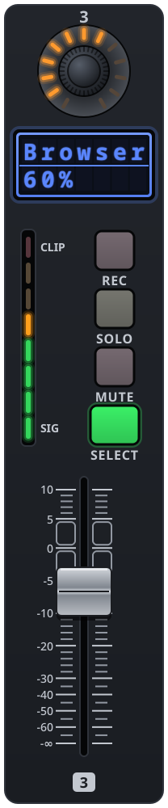
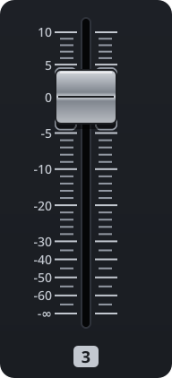
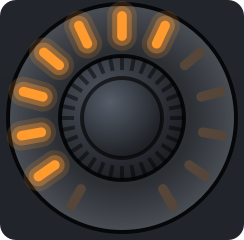
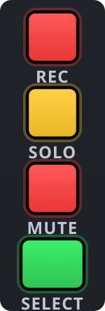

GUI¶
The GUI is a window that edits the configuration file (~/.config/xtouch-daemon/config.toml) and applies it to the
running daemon. You need no running daemon to edit; the daemon is only needed to see the live X-Touch, to test it and
to preview changes. Start it with xtouch-daemon gui (-c FILE opens another file), or with xtouch-daemon-gui if
you installed the Arch Linux package; see Install. If the file does not
exist yet, the window starts with the example configuration and writes the file when you save.
It edits channels, states and slots: what the strips of the X-Touch control, and when.
New here?
The Setup tour builds a configuration with the GUI, page by page. This page is the reference.

The window¶
The GUI shows two panels, which it calls windows: Configuration, where you edit, and Device, which draws the X-Touch (see The window Device); without hardware it draws the virtual device, an X-Touch made of software. The window Configuration has a rail of four pages on its left, icons only. » at its foot shows their names, « hides them again; the GUI remembers it.
What each slot shows when, see The slots.
Two groups: the channels (each takes one strip), then the pools (a pool hands a member, e.g. the next application
that plays, to every slot that names it): the built-in [pool.apps], [pool.people], [pool.auto] and
[pool.devices]. A candidate is one entry of the list of a slot (what it may show). The drop-down list Shows
of a candidate on the page Slots has the same two groups.
- Add (by type, or a pool of channels of your own), Duplicate and Remove.
- The id of a channel or pool can be renamed: the slots, conditions, pools and controls that name it follow.
- Each says where it is used (
slot 2,pool games,state call).
The modes first, then the other states. The form asks in order:
- State or Mode. A mode has a label and a priority.
- On while: Sources or Condition, never both. Switching between them asks before it removes what the other had.
- Sources lists only the ones the state has, each with ✕ to remove it. Add source offers the others ("An application plays", "You are in the voice chat", ...). The state is on while any of them is.
- Condition takes a condition of other states and modes, in the field of the page Slots.
Delays and overrides (delay_on, delay_off, persist) are folded away until a state has one. Above the form
the GUI says what the daemon reports about the state right now: since when it is on, from which source, its
override (a value set by hand, in Home Assistant or with xtouch-daemon mode, that holds in place of the sources),
and which slots and controls use the state.
[behavior]and[aliases].[mqtt], as "Home Assistant".[homeassistant], as "Home Assistant API".[switching], as "Modes and chord": the two Solo buttons that you hold together to cycle the modes (the chord), and the banner that shows a new mode.[voip], as "Voice chat". It has a box for each voice chat client with a plugin, Mumble and TeamSpeak. The box tells whether the plugin is connected, lists the steps of its setup, and installs the plugin with "Install Mumble plugin" or "Install TeamSpeak plugin". A client that is not installed gets one line.[device], as "Extender": the sound card of the X-Touch, touch sensors, start-up.
Slots, Channels and States have a list (or the slots) on the left and what is picked on the right. The handle between them (the short upright bar) gives either side more room; each page keeps its share for the next start.
The window Device¶
The window Device shows the X-Touch on every page, above the window Configuration at first.
- The title bar of either window moves it to another side of the window, next to the other one, or out of it as a window of its own (e.g. on another screen). The GUI keeps where they are for the next start.
- View → Device closes and opens the X-Touch. Configuration always stays open.
- Clicking a strip (or Left, Right, Home, End) shows its slot on the page Slots of the window Configuration.

The drawing of the X-Touch shows each strip as on the X-Touch:
- the encoder with its ring of 13 LEDs (Mackie Control lights the middle 11);
- the LCD: the backlight in the strip's color shines around a dark panel and through its characters, as on the X-Touch;
- the meter next to Rec, Solo, Mute and Select;
- the fader with its dB scale: the middle of the cap marks the value, -∞ at the bottom, 0 dB at 77 % of the travel
(the option
unity_atof[behavior]).
What each slot shows is printed under its LCD.
Header and footer¶
- Header: the state of the service, with buttons to install, start, restart or stop it (see The service), and what the sound server has.
- Footer: the problems, whether the X-Touch runs the file, the control Preview (while there are unsaved changes or Simulate is open), and the buttons Undo, Redo, Revert and "Save and apply".
- Title: the file, with • while there are unsaved changes.
Help where you look¶
- While the mouse is on something with a tooltip, the footer shows its first sentence at once, in place of the status line. The tooltip follows after a moment, with the states, channels and slots it names in their colors.
- A pill is a small status label (e.g. "running"). One with ▾ opens a popover, a small panel inside the window, on a click. It says what the pill means in full, with what you can do about it: a row per thing, with a bar in the color of how it is doing. A problem is also tinted, and its fix is the main button.
- A control that is off says why next to it (e.g. "Play: device not connected").
Colors¶
States, channels and slots have a color each, in the whole window: the icons of their pages on the rail, the chips of
the slots, the state bar, and the words and sections in the help ([state.gaming], "the slot", "an application",
apps).
| Color | For |
|---|---|
| Violet | States and modes |
| Teal | Channels, and what else a slot can show: pools, people |
| Orange | Slots |
| Yellow | A condition of presence (present: a channel is there, e.g. the headphones are connected) |
| The color of the text | The controls of the X-Touch (Select, Mute, the fader, the encoder, ...), which stand out from the help |
Lists and pages that scroll cast a soft shadow at an edge where more of them is hidden, and popovers a shadow on the window under them.
Menus¶
| Menu | Has |
|---|---|
| File | Save and apply, Revert, Quit |
| Edit | Undo, Redo |
| View | The window Device, the window Log, the dark or the light theme, the zoom |
| Help | This documentation |
The menus open inside the window, as the lists of drop-down fields and of suggestions do: a screenshot key and the keys of the window manager work while one is open. Alt and the underlined letter open a menu; the arrows, Enter and Esc work in it as usual. The menus Add of the pages Channels and States say under each entry what it does.
The service¶
The pill of the service in the header tells its state: "running", "stopped", "not installed", or the worst problem of a connection of the daemon. What the service needs (Install and start, Start, or Restart after an upgrade) also has its button next to the pill.
A click on the pill opens:
- the service, with Install and start, Start or Restart (Install and start does what
xtouch-daemon install-service --nowdoes), and, while it runs, Stop (systemctl --user stop: it stays enabled, so it starts again with the next session, or with "Start"); - the unit systemd uses;
- the connections of the daemon, each with its settings.
Installing and starting ask first.
| Unit | What it is |
|---|---|
| packaged | The one of the Arch Linux package (/usr/lib/systemd/user/xtouch-daemon.service). |
| own unit | A unit in ~/.config/systemd/user, which install-service wrote, e.g. for a checkout. The popover has its path and the program it starts. |
- Install and start
- The effect depends on how you installed the GUI. The GUI of the Arch Linux package enables and starts the unit of
the package and writes no file. A GUI installed in another way (e.g. from the source) writes a unit for its own
xtouch-daemonto~/.config/systemd/user, then enables and starts it. - Use the packaged unit
- Shows while a unit in
~/.config/systemd/useroverrides the one of the package. It removes that file; an enabled service stays enabled, and a running one restarts with the program of the package. - Restart
- Stands out (with a tooltip that names both versions) when the daemon runs another version than the one installed, e.g. after an upgrade of the package: the daemon keeps running the old version until it restarts. This needs a daemon that tells its version (0.1.0 and later), and only counts for the service of the installation the GUI runs from.
A daemon outside systemd
A daemon that runs outside systemd (e.g. from a terminal or an IDE) is found too: the header shows "running elsewhere", and saving reloads it. The GUI does not start, restart or stop that one: restart it where it runs.
Zoom¶
| Keys | Zoom |
|---|---|
| Ctrl++ (or Ctrl+=) | Larger |
| Ctrl+- | Smaller |
| Ctrl+0 | Back to 100 % |
View → Zoom has the levels from 67 % to 300 %. The GUI keeps the zoom for the next start, like the theme. The zoom is
on top of a QT_SCALE_FACTOR of the environment.
Note
Qt scales a window only when it opens, so a new zoom opens the window again at the new size. Unsaved changes, undo, the selected slot and the page stay.
Live view¶
While the daemon runs, the drawing shows what the X-Touch shows right now, read from the daemon's live view. A pill on the right of the bar of the window Device says what the drawing shows:
| Pill | The drawing |
|---|---|
| Live | What the X-Touch shows right now. |
| No daemon | Dark strips: the drawing is the X-Touch, and only the daemon drives it. Start it (xtouch-daemon install-service --now), or use "Try without a device", which starts a daemon with the virtual device. |
| Live · not connected | Dark strips: the daemon runs, but the X-Touch is not connected. They light up with the startup sequence once it is there. |
| Live · virtual device | The daemon drives the virtual device (run --virtual-device). |
| virtual device not running · Open it | The daemon waits for the virtual device: a click opens it in the window (see below). |
When the daemon stops, the drawing shows its shutdown sequence too, until the strips are dark.
Next to it, a pill shows the mode the X-Touch shows: "Mode: gaming", "No
mode" while no mode is on (the mode is then default), "· by hand" when it was picked by hand. A mode is a state with mode = true: one at a time
is on. A click lists the states, with what turned each on, and picks a mode by hand ("Pick gaming", "Pick no mode",
"Back to the rules").
The pill of the service at the top tells what the daemon is connected to: "running" while all is well, else the worst problem, e.g. "running · Home Assistant not authorized" or "running · device not connected". A click lists each connection, how it is doing and why, with a button to its settings:
- the X-Touch and the sound server;
- Home Assistant with an
[mqtt]section: the broker's own words and what to check; - the Home Assistant API while a part shows or sets an entity: e.g. "bad token" or "unreachable";
- the voice chat with
[voip].
Select and Play¶
A bar above the drawing of the X-Touch switches what the mouse does on it:
A click picks a strip, and with it its slot on the page Slots.
Dragging a strip moves its slot to another place: the strip lifts out of the row, the others glide aside, and a dashed place shows where it goes. Esc puts it back. Ctrl+Left / Ctrl+Right and the context menu (Move left, Move right) do the same.
A slot takes its candidates ([slots]) and its controls ([controls]) along, the slots in between make room;
Ctrl+Z moves it back. Comments above the slots in the file stay where they are.
The mouse is a hand on the X-Touch, and the drawing looks like the X-Touch: no strip is selected, and there are no outlines of the selection, the focus or the mouse. The selection comes back with Select.
| Part | The mouse |
|---|---|
 Fader |
Press to touch it, drag to move it, release to let go. Alt-drag moves it without a touch, as the motor of the X-Touch moves it. This lets you try what the daemon does when a fader moves without a finger on it: it puts the fader back to the value it holds. |
 Button Button |
Held while the mouse button is down. |
 Encoder |
The wheel turns it (a touchpad too), and so does a drag on the knob (up or right turns it clockwise). A click pushes it, and holding the knob still holds it down. Holding on an LED of the ring turns it until the ring lights that LED. |
Play works on the virtual device the window hosts, and on the X-Touch of a running daemon. Then the daemon takes what the mouse does as if the X-Touch sent it: the mixer acts, and a motorized fader follows once it is let go. The fader under the mouse is drawn there at once. If the drawing shows a preview in the GUI (see Preview), the mouse acts on the virtual twin, a copy of the X-Touch that the daemon runs for the preview, not on the real X-Touch.
When Play is off
Play is off in these cases: no daemon runs (or the daemon belongs to another user, or is too old), or the X-Touch is
not connected. The bar says why next to it ("Play: device not connected"). One case is the exception: the
daemon is set to drive the virtual device ([device] virtual = true), but the virtual device is not running yet. Then
Play is on, and a click on it opens the virtual device in the window and plays on it.
Try without a device
While no daemon runs, "Try without a device" starts one with the virtual device on this file (saved first if it is new) and opens the X-Touch in the window, in Play: to set everything up and try it before you have an X-Touch. That daemon ends with the window.
Test the device¶
"Test the device", above the drawing, asks the daemon to test the X-Touch: the strips light up one after the other (the sweep), then every strip answers its own controls, on the X-Touch and in the drawing, so the two can be compared. A bar says what each control does:
| Input on a strip | What the strip shows |
|---|---|
| Fader moved | The meter follows the fader. |
| Fader touched, let go | touch, let go |
| Rec, Solo, Mute, Select pressed | Its LED goes on, flashing, off (mute on, mute fl, mute off). |
| Encoder turned | Changes what the encoder edits, wrapping around, and shows its value. |
| Encoder pushed | The next thing the encoder edits: the position of the ring (ring 7), its mode with and without the two LEDs at the ends of the ring (dot, boost, wrap, spread, dot+c ...), the color of the LCD, the motor fader in steps of 10 % (fad 60%). |
During the test, Play works on the drawing: you can touch and press it with the mouse (this includes the virtual device that the window hosts). The slots go on meanwhile (Home Assistant still sees them), but show on the X-Touch only again when the test ends: a click on the button, closing the window, a preview "On the device", or the X-Touch going away. The footer says why it ended.
Log¶
View → Log (Ctrl+L) opens the window Log: the log of the daemon that runs, the same records the journal or its
terminal show, at the level the daemon runs with (-l debug for more). It works for the service and for a daemon
started in a terminal or an IDE. Like the window Device, it can go to any side or be a window of its own.
- Colors: warnings in yellow, errors in red, debug records in the color of hints, the time of each in it too.
- Level: shows the records of that level and above.
- Search: marks the text in the log, ignoring case, and counts the matches. Enter selects the next one.
- Follow: keeps the latest records in view. Scrolling up stops it, scrolling to the end (or the button) starts it again.
The window gets the last 1000 records when it opens, then every new one, and keeps the latest 5000. When no daemon runs, it says so; when the daemon stops, the last records stay, and the window starts over when it is back.
Note
A daemon of an older version has no log for the window: restart it to run the installed version.
The virtual device¶
While the window hosts the virtual device, Play is on (see Select and Play). A bar above the drawing:
- unplugs it and plugs it in again;
- switches it off and on (the faders go down by themselves, as on the X-Touch);
- breaks the touch sensor of faders ("Broken touch"), to try
touchless_faders; - "Close" closes it, and so does closing the window: for the daemon it is unplugged.
What the drawing shows still comes from the daemon, which is what reached the X-Touch.
When the X-Touch ([device] name) is plugged in while the daemon drives the virtual one, a bar above the drawing says
so. Its button switches to the X-Touch:
| Daemon | Button |
|---|---|
[device] virtual = true in the file |
Switch to it: turns virtual off, saves the file (after asking, when it has other changes) and closes the virtual device. The daemon reloads and takes the X-Touch, without a restart. |
| The daemon of "Try without a device" | End the trial: ends that daemon. Start the service to use the X-Touch. |
Started elsewhere with --virtual-device |
No button: it only uses the X-Touch after a restart without it, and the bar says so. |
Preview¶
What the X-Touch runs¶
Next to Save and apply, a pill says what the X-Touch runs. A click tells it in full, with the path of the file ("Copy the path", "Open the folder") and the file the daemon reads when that is another one.
| Pill | Means |
|---|---|
| Saved, on the device | Nothing is unsaved, and the X-Touch runs the saved file. |
| Unsaved changes | You changed something; the X-Touch still runs the saved file. |
| In the GUI, not saved | The changes show on the virtual twin. |
| On the device, not saved | The X-Touch runs the changes ("Sending to the device…" for a moment after a change). |
| On the device · simulated | The X-Touch shows the what-if of Simulate. |
| Paused: problems | The configuration has problems and is not sent. |
| e.g. Not running, Not on the device yet | What is wrong. |
Where the changes show¶
While there are unsaved changes, or Simulate is open, the control "Preview" sits next to the pill. It decides where the changes (and Simulate, which always includes them) show before they are saved, a moment after each change (undo and redo too). The file is not written.
The window shows the preview on a virtual twin of the X-Touch in the daemon. The twin is a second, complete set of strips that drives no real sound, voice chat, Home Assistant or X-Touch.
- The drawing, the cards of the page Slots and Play show the twin, with a frame around the drawing.
- Without Simulate, the twin runs the changes in the situation of now: the mode and the states the X-Touch has, and the applications, people and sound devices there are.
- The X-Touch keeps running the saved file. The pill says "In the GUI, not saved".
The X-Touch runs the preview, before it is saved: pick it to try the changes for real. The drawing shows the X-Touch, and the pill says "On the device, not saved" ("Sending to the device…" for a moment after a change).
The drawing shows the X-Touch as it is, running the saved file, for when you can't see the X-Touch. The changes show nowhere until you save them or pick another place. Opening Simulate moves the preview to In the GUI, and ending it back to Off.
The place stays as you set it for the next changes until the window closes (Simulate is the exception, see Off above); a new window starts with In the GUI. The places say why they are off in their tooltips: In the GUI needs a running daemon of your user; On the device also needs one that reads this file. A daemon from before this feature has neither (restart it to run the installed version).
Back to the file¶
- Save and apply makes it the configuration: the daemon loads the saved file, which is what the preview showed.
- Another place, closing the window (it asks about unsaved changes as usual, and says when the X-Touch runs them) or "Revert" brings back the saved file.
- A window that crashed does too: the daemon goes back to the file when the connection of the window ends, or when the window does not answer for 10 seconds.
- On the device, the file also comes back when it changes on disk, or the daemon is reloaded. Then the preview goes back to In the GUI, and the window says why.
What else to know¶
What the daemon does not take
It shows in red under the status bar at the top, and the preview keeps the version before. On the device the
preview can't change [mqtt] (that takes a save and a restart), nor [device] name and virtual (they take effect when
you save: the daemon then reloads and switches the X-Touch, with no restart). A configuration with problems is not sent at all: the pill says "Paused: problems" until they are fixed.
- Channels, states and slots
- All are part of the preview: a slot you changed in the editor shows in the preview as you edited it.
- Simulate
- Its situation shows where the preview shows. On the device, the X-Touch shows the what-if of Simulate instead of
what really happens: the states and the mode it sets, its channels present or absent, and its people, applications
and sound devices. Real ones come first, so their faders move real audio; made-up ones fill the rest (
App 1,Device 1). Delays and dwells apply as they really do. The pill says "On the device · simulated". Home Assistant never sees it: its slot and state sensors stay as they really are, and nothing of it is kept. - One window on the X-Touch at a time
- A second window that picks On the device takes over, and the first one's preview goes back to In the GUI.
- Home Assistant
- While you preview, a channel that your changes removed keeps its entities in Home Assistant, with their last state; nothing drives them for now. They work as before once the saved file runs again. Entities of channels that only the changes had are removed again when the preview ends.
The slots¶
The page Slots has the state bar at the top, a card per slot, and the inspector of the slot picked. Clicking a strip in the window Device (or Left, Right, Home, End) picks its card, with the candidate it shows.
State bar¶
The state bar lists the states and modes: ● on, ○ off, with the override in brackets. A click on one shows:
- what turned it on;
- its override: what holds the state on or off in place of its sources. It is a real setting of the daemon, the same
that Home Assistant or
xtouch-daemon modeset, with the valuesauto(the sources decide),onandoff; for a mode, "pick it" and "back to the rules"; - a button to Simulate the state the other way round: it shows what the slots would show, and changes nothing on the X-Touch.
Cards¶
A card lists the candidates of its slot as rules, read from the top like "if, else if, else": the first whose condition holds wins.
| Row | Reads |
|---|---|
when gaming → auto |
auto while gaming is on. |
otherwise → browser (below it) |
browser the rest of the time. |
always |
A lone candidate without a condition. |
when app without a slot → apps |
A pool as a candidate with no if after it, here apps. A pool has an implicit condition: it shows only while it has a member, here an application that no other slot shows. If there is none, the slot goes on to the next candidate. |
The rail on the left joins the candidates from the top, with "else" between two and a node on each. The node is
green on the candidate that the X-Touch shows (or that Simulate would show). In a slot ["apps", "people"] where a
person sits on the slot, the green node is on people, even though apps is above it: apps had nothing left to hand
out.
- Above the green node, the candidates are dimmed with why they did not win (
✗ browser doesn't play,✗ browser is on slot 3). - Below it, they are dimmed more: not reached.
- When none of them has anything to show (e.g. the last is a pool with no member left), all are dimmed with why
(
✗ no person without a slot). The rail ends in a row of its own, "nothing to show: the strip is dark", which is the one shown.
The chips:
- What the slot shows is a filled chip, in teal (see Colors). On the one shown, the chip of a pool names
what it hands out there (
apps · firefox,people · Alice), and its tooltip who else waits for a slot. - Conditions are outlined chips. The states are violet (
call,not gaming, one peror). -
presentis spelled out in an olive chip (green in the light theme), in what it means for the type of the channel or pool:Condition Reads browser if presentwhen browser plays → browsermic if presentmic is connectedmum if presentmum is in the voice chatpresent(people)someone is in the voice chat -
Options of the strip in that slot only follow as in the file (
color = white, rec = recording).

A tiny LCD after what a row shows has the color of the strip: the candidate's own color, else the channel's or
the pool's, else white. For a candidate that can show several colors, the row has several tiny LCDs: auto has two
(one for applications and one for people), a pool of channels has one for each color of its channels, and - has a
dark one. Its tooltip says where the color comes from.
Editing: + adds auto at the end; the bin (or Del) removes the candidate picked. Drag a candidate, or move it
with Ctrl+Up and Ctrl+Down. A slot without candidates shows auto. A card that gets a line more or less grows
or shrinks smoothly.
Inspector¶
The inspector starts with the path of the slot's candidates, e.g. Slot 3 › 1 games › 2 apps: the slot first tried
candidate 1 (games) and then went on to candidate 2 (apps). The candidate you picked is highlighted. ● marks the
candidate that the slot shows. ○ marks a candidate that the slot came to but that had nothing left to show. A click on
a candidate picks it.
Below it, a box says what goes on, the same as xtouch-daemon why 3:
- why the slot shows what it shows, a step a line (✗ a candidate passed over and why, → what it shows);
- which channel the candidate shows, where else that is used and where it is now;
- or what a pool hands out, and from which side.
Then it edits the candidate picked:
- Shows
- A channel, a pool such as
apps,peopleorauto, or-. - When
- The condition: states violet, channels in
present(...)teal, a mistake underlined in red with what is wrong in its tooltip. Typing offers the states, keywords and channels that fit, Ctrl+Space all of them. - Look in slot 3
- The options of its place: the look, on
appsandautothe encoder and the volume range, onpeoplethe look of a person's strip. An option left unset is as on the channel, or as in the pool: the field shows that value ("As on the channel: red"), and the button next to a set option unsets it again. A pool of channels has no options here: its channels bring their own look.
What the parts do is set on the channel or the pool: "Edit the channel" (or "Edit the pool") at the top opens it on the page Channels.
Controls of a slot¶
Controls of slot 3, at the end of the inspector, edits
[controls] of the slot: the parts that act the same whatever the
slot shows.
- "Add a part" claims one: the fader, the encoder, Select, Rec, Solo, the meter, the color or the line of the LCD.
An entry of
[controls]shows only the parts that it sets. Each has the field it has on the page Channels. - The bind button gives the fader, the encoder, the meter, the color and the line to Home Assistant, to an entity of it or to a program; the fader and the encoder also to a custom channel.
- A button takes its press (also a service of Home Assistant), its LED or both. If you set no press, a press does what it does for the channel that the slot shows; if you set no LED, the LED shows what the press does.
- When takes a condition of states and modes. Id names the entities in Home Assistant (shown once a part is in Home Assistant).
- "Add controls" adds another entry, e.g. for another
when: the first whosewhenholds acts, and the arrows move an entry up or down.
A problem shows at its field.
Simulate¶
Simulate shows what the slots would show:
- in another mode, or with other states on;
- with channels absent, or
auto plays(an application plays),people fillandapps fill(as many as there are slots); - with so many people in the call and applications that play (the two counts; the strips show their names).
Simulate includes the unsaved changes and shows where the preview shows: in the GUI, on the virtual twin of the X-Touch in the daemon, or on the X-Touch. A frame goes around the drawing in the window Device, and a bar of what-ifs replaces the state bar. The drawing, the cards and the box of the inspector show it, and Play can operate it. Esc, or Simulate again, ends it.
Note
Simulate needs a running daemon of your user: without one its button is off and says how to start it.
Editing options¶
The forms come from the options of the configuration, so every option has a field. The options of a
channel are in cards in the order of the X-Touch, from top to bottom: what it
controls, the encoder, the display, the buttons, the fader and the meter, then
those about slots (tags, in_pool, ...). Rec, Solo and Select each have what a press does, what a hold does and
what the LED shows; unset, each shows the default of the type.
Drawings of the parts¶
The cards of the encoder, the display, the buttons and the fader have a drawing of that part of the strip. It shows what the options do on the X-Touch in a few steps (‹ and › go through them), each with a caption. It follows the values in the form at once, saved or not, at the step shown.
-
Encoder
The ring as the encoder turns and is pushed.
-
Display
The LCD while audio plays (with the label of each choice), while muted and with nothing to control.
-

Buttons
Which LEDs light while audio plays, an application records or the strip is muted, and after a press or a hold of each button that does something.
-
Fader and meter
The volume at the bottom, at the 0 dB mark and at the top of the fader, with what the meter shows there.
Fields¶
| Option | Field |
|---|---|
| On or off | A switch. |
| A number | A number field with its range. |
| A choice | A drop-down list. It says what the chosen value does (e.g. recording for the Rec LED); each value says it as a tooltip in the list. |
| A color | Color swatches. |
| A list | Chips. |
| A secret | A masked field. |
| A file | A file picker. |
meter |
One choice: the level before the fader, after it, or off. |
choices, profiles |
A list of entries (below). |
| A part that can be bound | A bind button (below). |
| An entity, an attribute | Suggestions from Home Assistant (below). |
Each field has:
- the help of the option under it, with its default and, where the documentation explains more, a "Learn more" link to that section;
- a button that sets the option back to its default;
- its errors next to it, with the same messages as
xtouch-daemon check-config. The problems button in the footer lists them all; a click opens the page of the problem. An unknown option can be removed from there.
The mouse wheel scrolls the page, also over a number or a choice: it never changes a value.
choicesandprofiles- A list of entries, each with its label, its output or input and what it needs. The pencil or a double click opens an entry
with its fields, with the outputs or inputs, the sound cards and the profiles of its card to pick from; the card and the
profile are under "Switch the sound card first". Drag ⠿ (or Ctrl+Up / Ctrl+Down) to change the order,
which is the order Select goes through them. While a channel has
choices,deviceandprofilesare hidden, and the other way around: a channel has one or the other. - The bind button
-
Next to each part that can be bound: the fader, the encoder, the LCD, the color, the meter,
present. It offers:Choice Shows under the part Not bound No further options: the part does what its type says again. Home Assistant (with [mqtt])No further options: the daemon creates an entity for the part in Home Assistant (see Home Assistant). An entity (with [homeassistant])The options of the entity, e.g. entity,attribute,min,service.A program The options of the program, e.g. set,watch(orpollandevery),minandmax.A problem in one of the options shows under its row.
- The field of an entity
- Suggests the entities of Home Assistant (see below); the field of an attribute
those of the entity picked, with their values now. An unset option says what the kind of the entity (its domain, the part of its id before the dot, e.g.
light) does, e.g. "default: 255, of a light" formaxof a light, or "default: light.turn_on, of a light" forservice.datais typed as an inline table, e.g.{ brightness_pct = 50 }. - A button's press, hold and LED
-
On a channel page, typing in their lists binds the button:
Typed In the list of Does run: ...a press or a hold Runs a program. watch: ...an LED Shows what a program prints. poll: ...an LED Shows what a program prints, run every everyseconds.service: ...a press or a hold Calls a service of Home Assistant. entity: ...an LED Shows an entity. Their options (the service, the entity,
data,attribute) show under the list. A candidate with options of its own in a slot (called a "place", see Slots) and a pool take only entries you pick from the lists (such asrecording), not the typed ones in the table.
[mqtt] can be added and removed on its page. Above its options, the page shows how the daemon's connection is
doing (or that the daemon runs without the section, which it reads only when it starts). "Test connection" connects
once with the settings as they are in the editor, saved or not, and says what is wrong if that fails.
The page "Home Assistant API" ([homeassistant]) does the same for the API of Home Assistant: how the daemon's
connection is doing (it connects only while a part shows or sets an entity), and "Test connection". The test logs in
with the address and the token in the editor and says the version of Home Assistant and how many entities it has, or
what is wrong: a token it refuses, an address where nothing answers. The entities it found are the suggestions then.
Suggestions from Home Assistant¶
With [homeassistant], the field of an entity suggests the entities of Home Assistant. The window reads them with the
address and the token in the editor, saved or not, when a field of an entity shows, and again a minute later or with
other settings.
- Each line has the icon of its domain, the name of the entity, its state now (e.g.
21.5 °C) and below it its id. - A click into the field or the focus opens the list inside the window. Typing narrows it down, by any part of the id or the name. Up and Down move in it, Enter or Tab picks, Esc closes it.
- The field of an attribute suggests the attributes of the entity picked.
Without suggestions, a line under the field says why: no [homeassistant], a problem of its settings, or that the
window can't reach Home Assistant (with what to check, and whether the daemon reaches it). "Settings" opens the page
of the section. You can always type the id.
The token of token_env
The window connects on its own, with the token in the editor, not through the daemon. With token_env, the token
is in the environment of the service, and the window has none: the test fails and there are no suggestions. Start
the GUI with the variable set (e.g. HA_TOKEN=... xtouch-daemon gui for token_env = "HA_TOKEN"), or use
token_file.
Suggestions from the sound server¶
The GUI reads the sound server and suggests what it has. A click into a field opens the list, and typing narrows it
down (by any part of a name or a description, or a pattern with * and ?), with the parts that match highlighted.
Each line says what it is, where it is known from (the default, the active profile, a preset) and below it the name
that goes into the option. Under device, card and profile of a choice, a line says what the value matches, e.g.
"Matches 2: ..." for bluez_output.*, or "Matches nothing known" (a sound device can come later).
| Option | Suggestions |
|---|---|
device |
The outputs and inputs by node name, with their descriptions; the default is marked. Then the sound devices that another profile of their sound card would make (e.g. the digital output while the card is in its analog profile): picked for a choice, they fill in its card and profile. Then the sound devices the daemon saw that are not there now, e.g. Bluetooth headphones that are off ("seen 3 days ago"); Del in the list forgets one. |
card, profile of a choice |
The sound cards (by description, or the outputs and inputs they have), and the profiles of the card of the choice. |
profiles |
The profiles of the sound cards of those sound cards; the active one is marked. |
match, exclude of [pool.apps], apps and recording of a state |
The presets (@browsers, ...) first, then the names and binaries of the applications that play. A preset's tooltip tells what it stands for; its chip is outlined. |
processes of a state |
The presets for processes. |
[aliases] |
The names of the applications that play. |
person of a person channel |
The people in the voice chat now, as the running daemon tells them. |
The pill "Sound server: ..." says how much the GUI read. A click lists the outputs, inputs and applications, with "Read again" (also the refresh button next to it), e.g. after you started an application.
Without a sound server or a daemon
Without a sound server, type the names by hand. The people of the voice chat come from the daemon's live view: without a running daemon (or nobody in the channel), type the names by hand.
Undo¶
Every edit can be undone: Ctrl+Z undoes, Ctrl+Shift+Z redoes. That includes removing a channel and reverting the file, so neither asks first. Typing into one option is one step. Ctrl+Z undoes in the document also while a text field has the focus.
Closing the window with unsaved changes asks whether to save them.
Keyboard¶
Help → Keyboard shortcuts lists the keys. The keys of the menus follow the desktop; these are the usual ones:
| Keys | What they do |
|---|---|
| Ctrl+S | Save and apply |
| Ctrl+Z, Ctrl+Shift+Z | Undo, redo |
| Ctrl+1 to Ctrl+4 | Slots, Channels, States, Settings |
| Ctrl+L | Open or close the window Log |
| Del (or Backspace) | Remove the candidate, channel, pool or state picked, as its button Remove does |
| Ctrl+C, Ctrl+X, Ctrl+V | Copy, cut, paste it |
| Ctrl+D | Duplicate it |
| F2 | Rename it: the focus goes to its id (on a candidate: to Shows) |
| Ctrl+Up, Ctrl+Down | Move the candidate picked, or the entry of a table |
| Left, Right, Home, End | Pick a strip of the drawing; Ctrl+Left, Ctrl+Right move its slot |
| Tab, then Space or Enter | Open the details of a pill (e.g. the service, Live) |
| Esc | End Simulate, close a popover: the focus goes back to its pill |
Del, Ctrl+C and the others of the menu Edit are for the list that has the focus: the cards on Slots, the lists on Channels and States. In a field they edit its text.
- Copy puts the entry on the clipboard as in the file: a channel as
[channel.mic]with its options, a candidate as the value of the list of its slot ("browser if call"). - Paste takes that back, also from a text editor, and gives a channel, pool or state whose id is taken one after
it (
mic_2). A candidate goes after the one picked; channels, pools and states go at the end.
Save and apply¶
"Save and apply" (Ctrl+S) writes the file and reloads the daemon:
- It saves only a file without problems: the daemon would not take one with problems.
- Unchanged values keep their place and their comments, and a value keeps its form (a string, a list, tables) where it did not change. The file is written in place, so a symlinked configuration stays one.
- It reloads the running daemon when that reads the saved file: the service, or one started from a terminal or an IDE.
- Without unsaved changes the button is also on while the daemon runs another version of the file than the saved one (e.g. you edited the file outside the GUI). It then only reloads the daemon.
- A changed
[mqtt]section is not reloaded at all: the window offers "Restart the service" for the service; restart a daemon that runs elsewhere where it runs. A changed[device] nameorvirtualis reloaded: the daemon switches to that X-Touch. - Its pill then tells whether the X-Touch runs the saved file: "Saved, on the device", or "Not on the device yet".
If that stays, the daemon did not take the file, and its log says why (View →
Log, or
journalctl --user -u xtouch-daemon).
"Revert" drops the changes and reads the file again (Undo brings them back).
Changes of the file on disk¶
The window notices when something else changes the file while it is open: an editor, a script, init-config.
- Without unsaved changes it reads the file again. The page and the strip that were picked stay. Undo goes back to the version before, as changes to save.
- With unsaved changes a bar above the page asks. Reload reads the file and drops the changes (Undo brings them back). Keep mine goes on with them, and the next save overwrites the file.
- A file that can't be read (e.g. a TOML error) leaves the window as it is, and the bar says why. Once the file is fixed, the window reads it.
- "Save and apply" never overwrites a change it did not show: if the file changed since the window read it, it asks first (Overwrite, Reload or Cancel).
Next: Commands for the same things on the command line, Troubleshooting.